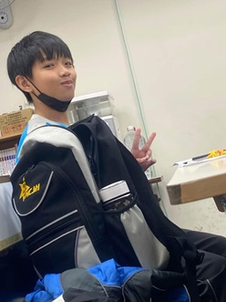
01江李謙 |
我是江李謙，大家都叫我小謙，我喜歡打籃球和算數學。 |
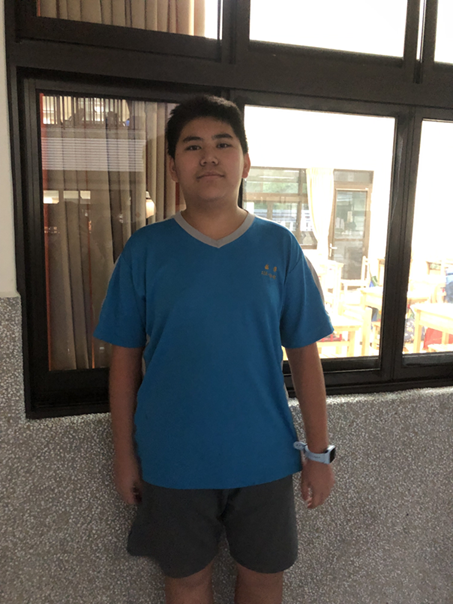
02陸子璿 |
我是71002陸子璿，喜歡玩ROBLOX和荒野亂鬥。 |
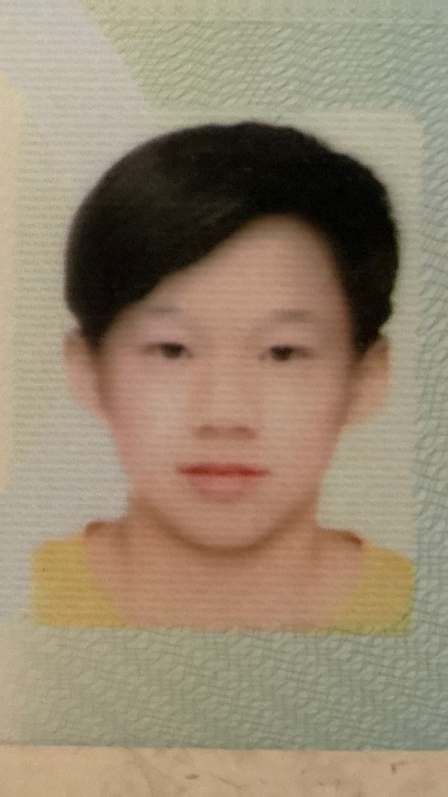
03郭峻旦 |
我是郭峻旦，成績、人品、性格、運動、和公分都很頂，純純你媽。中別人家的孫子。 |
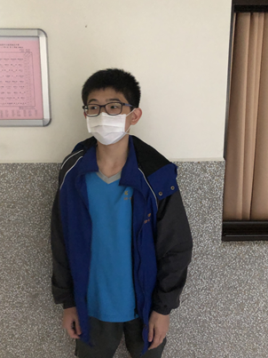
04汪加祐 |
我是七年十班4號汪加祐，我的興趣是看漫畫。 |
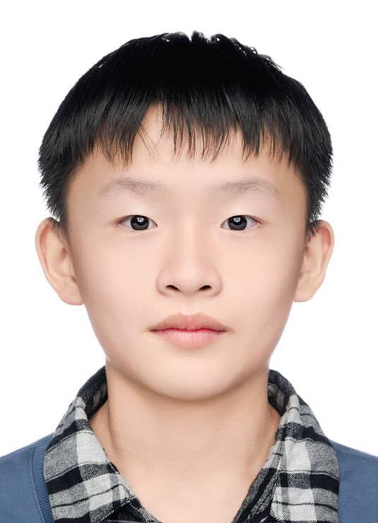
05邱柏珺 |
我是7年10班5號邱柏珺，我的興趣是打籃球、打電動、騎腳踏車。 |
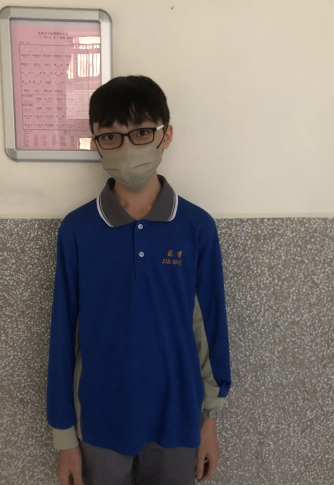
06林品銓 |
我是71006林品銓，很多人都叫我零品德，是柯南愛好者，也是本網頁的創作者。 |
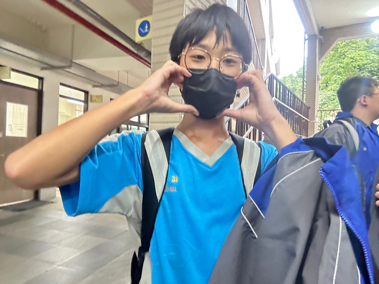
07陳健智 |
大家好我是陳健智，喜歡打籃球和踢足球。 |
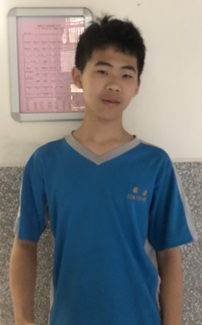
08陳新翰 |
我是陳新翰，綽號小騷騷，喜歡跳騷舞、看小說、打籃球。 |
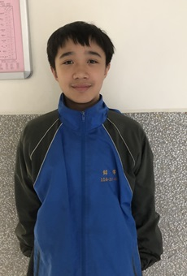
09張顥諹 |
我是張顥諹，我就讀銘傳國中。 |
10曾冠博 |
我是曾冠博，就讀銘傳國中，我興趣是打籃球，有一群很好的朋友。 |
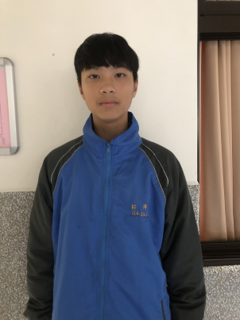
11塗侑勳 |
大家好，我是塗侑勳，我的興趣是打羽球，我最擅長的科目是數學，謝謝大家。 |
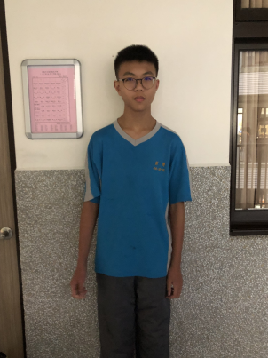 |
大家好我是羅右竤，來自深美國小喜歡打籃球，喜歡幫助人，討厭自以為是的人。 |
13蘇郁凱 |
大家好我是蘇郁凱，102年7月25日出生的。 |